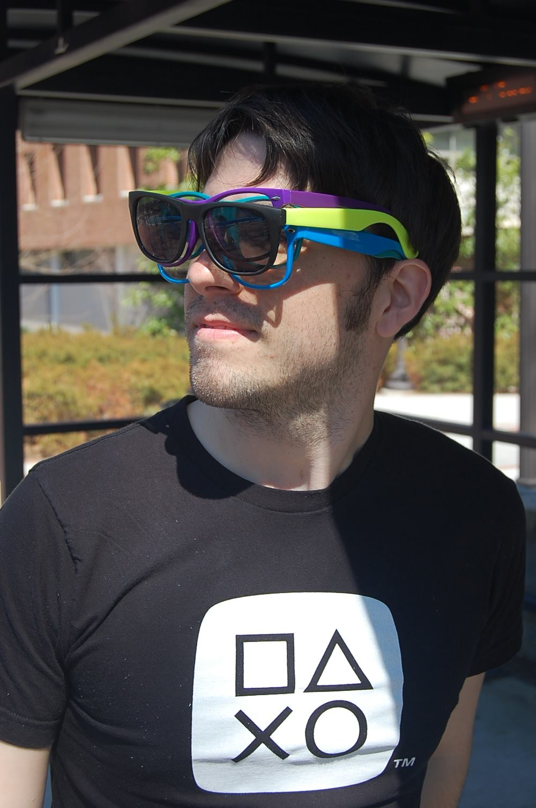

About
Who I am...
I am Kristjen (Christian) Kjems, born and raised in New Jersey and an MS graduate of Digital Media from the Georgia Institute of Technology.My time in the Digital Media program has, through a combination of both theoretical and practical work, afforded me the opportunity to become proficient and maintain proficiency in many facets of the digital design world.
When I'm not working on rad projects, I spend my time organizing events for great causes (like Different Games), running, and performing in theatrical productions.
What I do...
By focusing on user experience design principles and user testing, I successfully design for the front-end web and mobile applications, from prototyping to customer facing product, I write and parse through code, and am to able create aesthetically pleasing graphics.More than anything else, my love of and involvement within the performing arts, and background in English, have made me an exceptional experience designer; designing, through research, quality products, processes, services, events, and environments.
If I don't already know how to do something that is required of me while working on a project, I'll figure it out.
What I am looking for...
I am seeking a job with a company that has a casual, friendly atmosphere, and a collaborative, nurturing environment. My ideal position would afford me the opportunity to contribute both creatively and practically. I am open to all industries, be it a design agency, a corporate entity, or otherwise, and would be more than willing to relocate.Have some information on a company that I may be interested in? Let me know!
